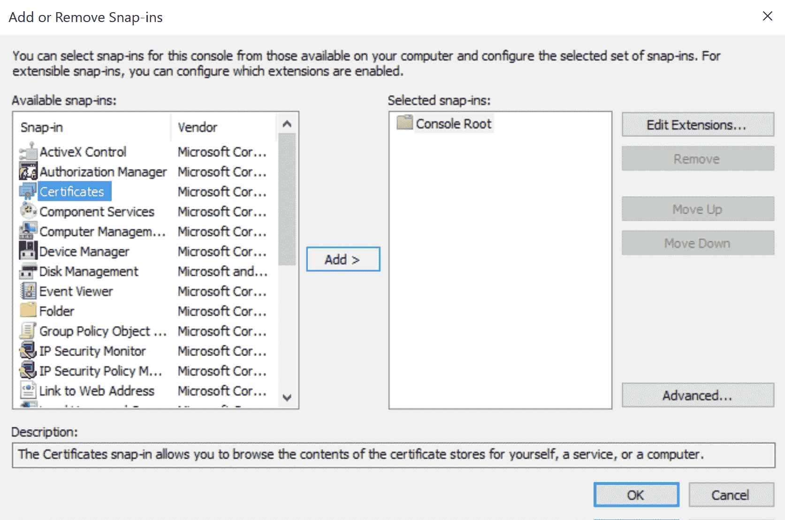
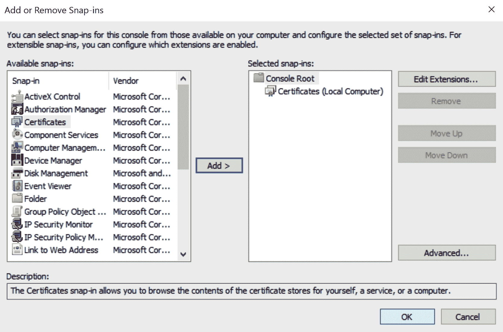

本章将向您简要介绍软件定义的数据中心 ( SDDC )如何跨越多个数据中心并成为混合服务提供商，独立于具有分布式数据和应用的物理基础设施。数字化转型正在改变商业模式，而物联网 ( IoT )在这一转型中扮演着至关重要的角色。业务增长正在加速，并在探索更好的方法，通过现代化的数据中心将新产品和服务快速推向市场，从而提供推动创新和增长所需的敏捷性、安全性和可扩展性。我们将了解客户在物联网实施中寻求的核心要求。
我们将了解为什么物联网对医疗、研究、科学和零售客户如此重要，因为他们的应用和数据将从数据中心到云再到边缘设备得到利用。我们还将通过了解如何跨边缘设备管理/处理海量数据，以及跨不同垂直行业的 VMware Pulse 物联网使用案例，了解物联网网络的转型。
我们将讨论以下主题:
您可以从https://my.vmware.com/web/vmware/details?下载 VMware Pulse IoT Center 1.1.0 从https://my . VMware . com/en/web/VMware/info/slug/networking _ security/VMware _ nsx _ T _ Data _ Center/2 _ x下载 group = PULSE _ IOT _ 110&product id = 751&rPId = 23122和 VMware NSX-T 数据中心。
物联网用例存在于大多数行业。它们可能对我们不明显，甚至对客户也不明显。物联网是一种工具，企业使用这种工具来实现更好的结果。在处理依赖物联网工具作为模式的结果时，它们是一致的:摄取、分析和参与。物联网解决方案从传感器和设备获取数据，然后分析组件使用这些数据得出结论(分析)，结果触发行动，允许企业与基础设施或其客户互动。
摄取、分析、从事被商家用来不断改进自己的产品和服务；这种主动或被动的反馈可能来自人、计算机、卡车或装配线。市场上观察到的物联网使用案例可分为三个高级 IT 价值管理目标:
让我们看一下其中的一些使用案例:
摄取、分析、参与在每个使用案例中都很明显。
VMware Pulse 物联网中心是一款安全的企业级物联网设备管理和监控解决方案。您可以从边缘到云装载、管理、监控和保护物联网用例，弥合 IT 和运营技术 ( OT )组织之间的差距，并通过 Pulse 物联网中心简化物联网设备管理。边缘系统上的 Liota 代理可实现数据协调，自动检测边缘系统，并通过将边缘系统映射到连接的设备，以无线方式提供 ( OTA )。它收集有关基础设施健康状况的遥测数据，并以高精度实时检测异常。它通过配置在灵活的包组合中升级的规则，管理任何边缘类型的软件 OTA 以及连接的端点。
它通过网络虚拟化创建分段数据流，提供物联网事物、网络、数据和人员的安全性，从而提供所有事物的完整可见性。我们必须首先发现客户的痛点，这些痛点阻碍了他们的业务增长，也减缓了他们的整体流程。
以下是有关 VMware Pulse 的疑问。
通过以下适合大多数客户的试探性问题来发现客户的棘手问题:
采用物联网解决方案的城市的发现问题:
以下是对采用物联网项目的医院的一些试探性询问:
以下是对采用物联网技术的设备制造公司的一些试探性询问:
OVA 基本上是一个 vApp，包含三个运行 Ubuntu 服务器的虚拟机 ( 虚拟机)。默认情况下，虚拟机的命名如下:
在部署期间，ova 将需要一些特定于应用程序的属性来帮助初始化自身。这些属性主要用于配置每个虚拟机中的应用程序。
可以使用 vSphere UI 中的部署 OVF 模板或命令行中的 OVF 工具通过 vSphere 部署 OVA。在首次启动虚拟机之前，请确保主机启用了来宾操作系统定制，以便为每个来宾操作系统注入正确的系统和网络设置。
此处显示了来宾操作系统定制向导:
部署还会要求一些属性来帮助设备在一定程度上进行自我配置。添加一个 EMQTT 凭证(用户名、密码)，以便在虚拟机首次启动时，代理使用这个预先准备的用户启动。这不是一个系统用户，而是一个 EMQTT 用户，客户机可以用它来连接代理。此选项只能配置一个用户名和密码。登录到mqttbroker虚拟机后，必须从命令行创建任何其他用户。用户名和密码应该在 8 到 64 个字符之间。建议您保留纯字母数字的用户名。该密码不用于任何内置的 Linux 用户帐户。
同样，向导会要求输入物联网 API 和物联网控制台的密码。物联网 API 的密码将用于保护数据库和生成的证书。物联网控制台的密码仅用于生成的证书。用户名和密码应该在 8 到 64 个字符之间。建议您保留纯字母数字的用户名。该密码不用于任何内置的 Linux 用户帐户。
我们可以使用 VMWare Pulse IoT API 和控制台作为输入，通过获取 MQTT 代理的公共 DNS 名称来生成 SSL 证书。这些值在证书生成过程中使用。该名称同时出现在生成的 SSL 证书的 CN 和 SAN 部分。因此，有必要在继续部署之前冻结域名，以防您需要继续使用具有自签名证书的服务器。
例如，下面是以下部署的特性:
通过导入向导进行的配置设置如下:
我们将了解 Pulse 物联网中心特定产品的安装和配置。需要按照以下顺序完成部署，以解决依赖性问题:
在部署 VMware Pulse 物联网中心组件之前，请确保所有计算和网络资源在部署基础架构中可用，无论是 VMware OneCloud 还是 VMware vCenter。默认情况下，ova 没有启用防火墙或 iptables 规则，在需要额外的安全增强或强化时，这些规则会留给部署团队使用。
projectice是没有sudo权限的标准 Linux 用户，用于运行 VMware Pulse 物联网中心组件。VMware Pulse 物联网中心控制台、Hazelcast 和 VMware Pulse 物联网中心 API 服务器在此帐户下作为系统服务运行。该服务作为守护程序运行，以支持系统重启时的自动重启。该帐户没有设置密码，因此，只能通过另一个登录会话使用sudo或su进行本地登录。该用户仅限于 Pulse IoT API 的虚拟机和 Pulse IoT 控制台的虚拟机。EMQTT 代理虚拟机没有此用户。root 帐户也存在，默认密码是vmware。所有默认密码都需要在首次登录时更改。
安装前需要以下先决条件:
iceadmin是拥有sudo权限的管理员用户，主要负责 VMware Pulse IoT Center 组件的配置和管理。VMware Pulse IoT Center 组件通常是系统服务，iceadmin帐户将用于根据情况需要安装/启动/停止/重启服务。此服务管理要求用户具有管理员权限。该帐户的默认密码是不带引号的vmware。
安装后，需要在设置|设备和用户|高级| IOT 支持中启用物联网支持:
只有在安装物联网 API 服务器后，才应配置此部分。VMware Pulse IoT API 注册来自 VMware Pulse 设备管理套件的通知，以加快资源刷新速度，而不是依赖于同步间隔。这有助于 Pulse 物联网 API 将资源保持在合理的准确度。每当发生以下事件之一时，这些通知就会从 VMware Pulse 设备管理套件发送到 Pulse IoT API:
只有在事件部分启用了设备的属性更改标记时，VMware Pulse 设备管理套件和 Pulse 物联网 API 才支持设备的属性更改通知，如资产编号、设备友好名称、组织组 ID、用户电子邮件地址、所有权、操作系统、电话号码或设备 MCC。VMware Pulse Device Management Suite 只支持组织组变更，组织组变更是在同一个 OG 树内完成的，也就是在它的子 OG 中完成。相同的事件会在一段时间后通知给侦听器。
在 Windows 服务器中安装 Pulse Device Management Suite 控制台时，VMware Pulse Device Management Suite 安装程序建议您启用 TLSv1.2。请确保启用 TLSv1.2，或者，如果错过了该步骤，请执行前面概述的手动步骤。始终确认注册表中保存了以下项。这是要通知 VMware Pulse IoT API 服务器的设备通知的强制注册表条目。
检查 Pulse 设备管理套件物理服务器中的以下注册表项:
"HKEY_LOCAL_MACHINE\\SYSTEM\\CurrentControlSet\\Control\\SecurityProviders\\SCHANNEL\\Protocols
TLS 1.2 Client"
Value name : DisabledByDefault
Type : DWORD (32-bit) value
Value : 0
Value name : Enabled
Type : DWORD (32-bit) value
Value : 1
如果注册表中缺少设置，请使用此注册表文件来创建它们。只需以管理员用户的身份在 Windows 服务器上右键单击该文件，然后选择“合并”。如果使用自签名证书安装 Pulse IoT API，请确保按照以下步骤将自签名证书的根 CA 证书添加到安装了 Pulse Device Management Suite 的机器上的可信根证书下存储的 Windows 系统证书中:


当 Pulse 设备管理套件对 Pulse IoT API 进行 SSL 调用以发送通知时，这将有助于 SSL 验证成功。仅添加证书不会使 SSL 调用成功，除非 VMware Pulse 设备管理套件 API 用来访问 Pulse IoT API 的主机名与为 Pulse IoT API 服务配置的实际证书相匹配。
VMware Pulse 设备管理套件需要满足以下需求:
VMware Pulse system(如果可以通过 Windows 虚拟机的内部路由获得)会在%SystemRoot%\drivers\etc\hosts文件中向使用外部 DNS 名称的任何一台计算机添加一个别名，以避免往返。DNS 名称对于 SSL 验证的发生非常重要，因为这些服务器中的每一个都是通过 HTTPS 调用的。
基于 VROPs 6.6 的定制版 VMware Pulse operational analytics 后端可从 IOT 发布工件中的链接下载。要登录虚拟机，root 用户的默认密码将为空。因此，只需在首次登录时按下输入并设置新密码。该登录应该从部署 OVA 的终端控制台进行。默认情况下，SSH 是禁用的。部署并启动后，在https://<IP-address>访问 vROps 实例 web UI，它将引导您完成 vROPs 的基本安装步骤。您可以选择安装/快速安装，并为 vROps 实例提供密码。您需要获得许可证密钥才能使用 vROPs。
企业考虑和实施物联网解决方案的主要动机是通过识别客户特定的物联网用例来提高企业生产力和内部效率。在考虑物联网用例时，我们关注可量化的目标，以显示生产力和效率的提高。只要我们注意到有数据产生，我们就有能力接收数据。这可能是一个尚未解决的问题，因此，企业没有对数据做任何处理。但是，当我们发现一个获取数据的机会时，我们应该考虑分析该数据，并利用分析结果与客户或基础架构合作。
在边缘系统上板载 Liota 代理，以支持数据编排、自动检测边缘系统和板载并供应 ota，并将边缘系统映射到连接的设备。我们可以监控和收集有关基础设施健康状况的遥测数据，以高精度实时检测异常，并设置规则以尽可能自动修复 OTA。
我们还可以管理任何边缘类型和连接端点的软件 OTA，设置规则在灵活的包组合中自动升级/修复，设置规则自动修复 OTA。我们可以保护物联网(物联网、网络、数据、人员)的安全，通过网络虚拟化创建分段数据流，并全面了解所有事物。
根据用例需求、环境和所需的加固能力选择网关/服务器；我们可以灵活选择运行 VMware IoT edge 的硬件。
VMware Pulse IoT edge 通过使用我们信任的技术在边缘实现分析，支持新的分布式物联网架构。接下来，我们将深入探讨一些用例。
医生希望收集关键信息，并通过解释数据和主动检测和治疗医疗问题，在护理点提供对患者生命体征、诊断和成像的实时访问。
客户希望通过自动化过程控制，让工人能够实时、自由地访问复杂的组装说明，从而通过提高可见性消除停机时间，并与供应商一起快速整理入库材料。
客户将拥有一个远程监控空气压缩机和其他设备的系统，这将通过与 VMware 合作来提高效率和降低成本。
随着通信变得数字化，控制实例成为从内部数据中心到云的通信枢纽，物联网流量和数据中心网络流量有所不同。
有三个新的大规模水平(东/西)交通区域:
具有新路径和新内容的流量包含大量东/西敏感的私有数据，如今的应用程序分散到数百个相同的(负载共享)或互补的(流程链)实例中，而每组数据集合都将被数据中心内的不同应用程序多次(随着时间的推移)处理。随着应用程序实例的来来去去，他们的东/西流量是高度动态的。这些应用程序会随着大多数敏感数据的处理和存储而频繁更新。我们应该做好准备，在高度动态的环境中预防、检测和遏制违规行为。
我们可以应用以下策略和主动行动来避免任何安全漏洞:
我们可以通过分离网络和安全性，在每个虚拟网卡上部署逻辑防火墙。每个虚拟网卡上的防火墙实例到虚拟机管理程序中嵌入的任何类型的虚拟交换机，尽可能靠近来宾虚拟机，但不属于来宾虚拟机。我们不会将流量从源头移动到检测点，而是将检测点移动到流量源头，网络基础设施与服务器的粒度保护无关。
vNIC 的分布式防火墙是合适的选择，它完全集成，可以最有效地应用策略。集成意味着我们身在何处或走向何方并不重要，即使我们偏离了轨道或改变了方向，它仍然有效，因为它内置于虚拟机管理程序中。集成还意味着，作为司机或乘客，我们没有责任提供保护，我们不能忘记或避免它，因为它内置于虚拟机管理程序中。集成也意味着它在物理上和功能上与一些传感器集成在一起，并将在正确的时间触发安全气囊。NSX·DFW 通过基于 vCenter/active directory 规则集进行抽象和自动化，定义了 Service Composer 自动化。
动态数据源表示系统的条件和变化，抽象层将在更高的层次上定义以响应条件和变化。我们使用 vCenter 和 active directory 来表示特定解决方案中有关服务器和用户的信息。NSX 管理器中的 Service Composer 将服务定义和 FW 规则动态转换为接口规则集，并将其下推。
我们拥有包含抽象所需数据的 vCenter。NSX DFW 服务作曲家帮助客户立即对变化作出反应，并宣布每一个必要的战略，战术行动。管理员无法远程控制每个组件的操作，而是定义一个策略(一组抽象的规则和措施)来控制和遵循合规性策略:

管制员反过来负责将战略转化为战术行动，协调这些行动，并保持监督，因为他们特别负责在情况变化时立即改变战术。数据中心的每个组件都扮演着各自的角色，这是由控制器分配的。从本地数据中心的角度来看，我们应该自动处理数据中心之间的流量以及所有 N/S 流量，或者说，数据中心之间的流量是 N/S 流量。
如果部署或更改因 N/S FW 规则集的必要更改而无法尽快上线，那么自动化本地数据中心就毫无意义。N/S 防火墙可以在其规则中使用 VMware 对象，因为这些对象是动态的，当实例出现或消失时，不会触及 N/S 防火墙的规则集进行日常更改。NSX 安全组可以由第三方防火墙动态使用，这些防火墙可以自动更改其规则集对象。
物理视角很难管理，需要跨数据中心的逻辑一致的操作。本地数据中心的本地馈送可能不够大和冗余，不足以扩展我们可以跨多个数据中心分布的计算。
随着更多 N/S(和 E/W)流量进入数据中心，物联网就绪数据中心必须遵循特定的安全性和可扩展性实践。我们还需要更多的数据中心间流量用于第三方工具集成，以实现以下目标:
我们可以通过虚拟化所有移动部件来实现端到端自动化。
物联网领域为联合解决方案提供独特价值的领域打开了许多新的大门。物联网有多种形式，如智能恒温器、监控患者生命指标的可穿戴医疗设备或记得最喜欢的饮料的智能自动售货机。物联网是网络世界与物理世界相遇的地方。任何物联网解决方案都需要将连接、移动通信、管理、基础设施和安全性与应用的生命周期结合起来。
客户需要一个基础设施来构建物联网解决方案；然后，他们需要在该基础架构上调配和管理数以百万计的东西。那些东西吐出的是海量数据，所以客户也需要收集、存储、分析数据，从中获得有意义的洞察，然后将这些洞察转化为有价值的行动。我们通过提供物联网要素来做到这一点，这使我们能够实现三大业务成果。
以下是三个业务目标:
在下一章中，我们将通过评估当前的内存大数据平台，了解如何在现代大数据平台中利用共享存储。我们将探讨大数据应用程序(如 Hadoop)如何作为这些平台的内存中功能来适应虚拟化，使它们更少依赖 I/O 和存储协议，以便我们可以利用虚拟化共享存储和基本的 VMware vSphere 功能来为大数据平台设计高可用性和以性能为导向的架构。